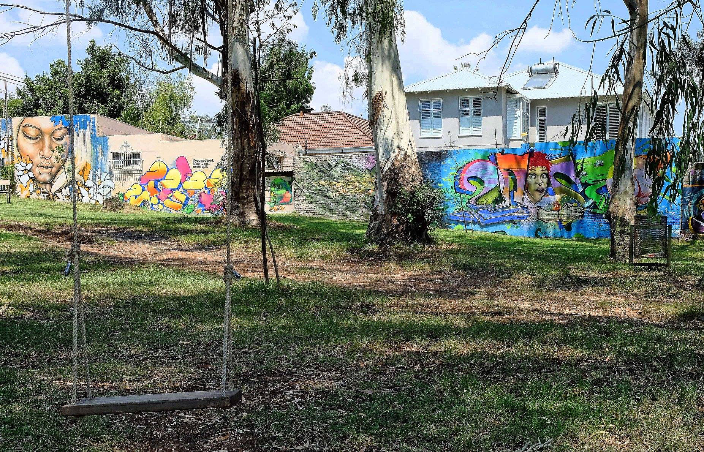
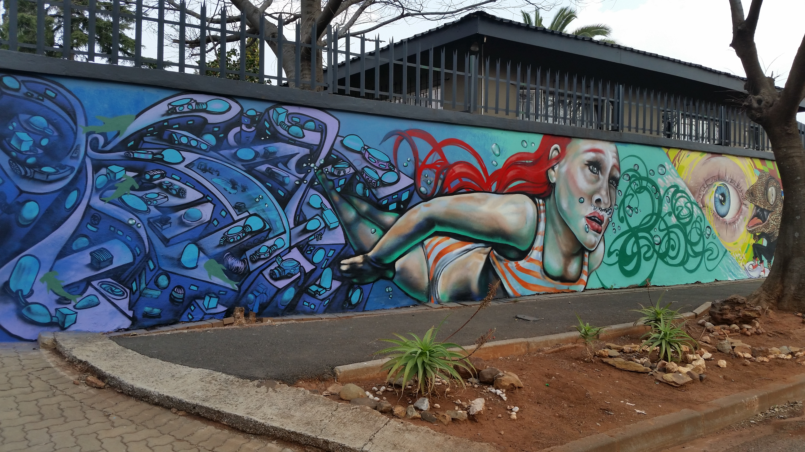

Charlette's Website
#6th Blog
The story behind the Graffiti
As he worked his mind became numb. He began to flow into his movements, the paint gliding across the wall streak after streak “Shtttttt…… shttttttt….” The sound of the spray can echoing in his head comforted him. When he heard that noise, he felt calm, he felt free, he felt that he was getting rid of everything that weighed him down. Stepping back, he was proud, proud of his creation, that he could release these scribbles and images from his mind, making them tangible for all to see.
If the police were to catch him he would hope that his creation would make them think again. To him it was not vandalism, to him it was pure art, scribbled out from his mind and into reality. He hoped they could appreciate his work and understand his need to create. Abolish the idea of vandalism and allow him to do something that was not only for him. A piece of art that someone might look at and see the colours, the lines, the reflection of his soul and resonate with what he is trying to say and that he trying to understand himself.
“Shtttttt….. Shtttttttt….” One more line and its done, it’s his best piece yet. He stepped back, admiring his work. This one will definitely turn some heads. Slumping the bag over his shoulder, the bottles clanking, he is done, and little does he know how much a stranger would see his art and fall in love with the message, just as he had hoped for.
- Charlette
The bottles rattled in his bag as he ran, he felt burning deep in his lungs and the numbness in his feet was spreading through his legs as his shoes thudded heavily against the road. Everything glowed in a horrible blue and red flashing light, the sirens scream spearing into his ears and cutting deeper into his heart. He was just trying to create an artwork, his hands were still slick and sticky, dripping with the colours he had used. Colours that can only be seen in red and blue flashes, the flashes that will forever haunt his memories.
The sirens were getting louder and louder, he wanted to curl up in a ball, cover his ears, and stop the noise. But he couldn’t. He had to keep running, until he was safe, until he could breathe again and the flashes were gone. If he hesitated for a second, he would be done for. They would catch him, and his life would be over. Over, all because he was doing what he loved. But sometimes what brings us the most joy can also cause us the greatest pain.
His feet where searing now, the numbness gone as he felt the blood pooling in the soles of his shoes. “I’m almost there. If I can just get to under the bridge, they won’t be able to catch me. I’ll be safe” So close, he pushed himself, running as hard as he can with his goal in sight. Yet sometimes we ignore the details when something we want is so close and a carless stumble came as he misjudged his step onto the pavement. His body lunged, while his heart plummeted. A careless step and now he was done for, the bottles rattled in his bag not the comforting rattles he heard on his walks home but more like they were also screaming at him, his stupid careless mistake is the reason these cans will be thrown always or left where their potential is wasted. Yelling that sounded like deep angry grumbles began to merge with the sirens: the police were bearing down upon him. a large figure forced his hands behind his back and a taser to his flank. He was now being shoved into the back of the police car, everything drowned in the hideous red and blue lights. His future was over all because he tried to do what he loved.
-Alijah
 
Images found at: https://page33.net/rejuvenating-parkhurst-park